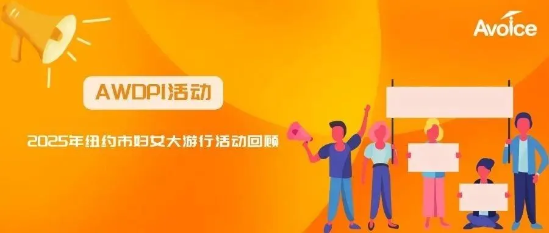
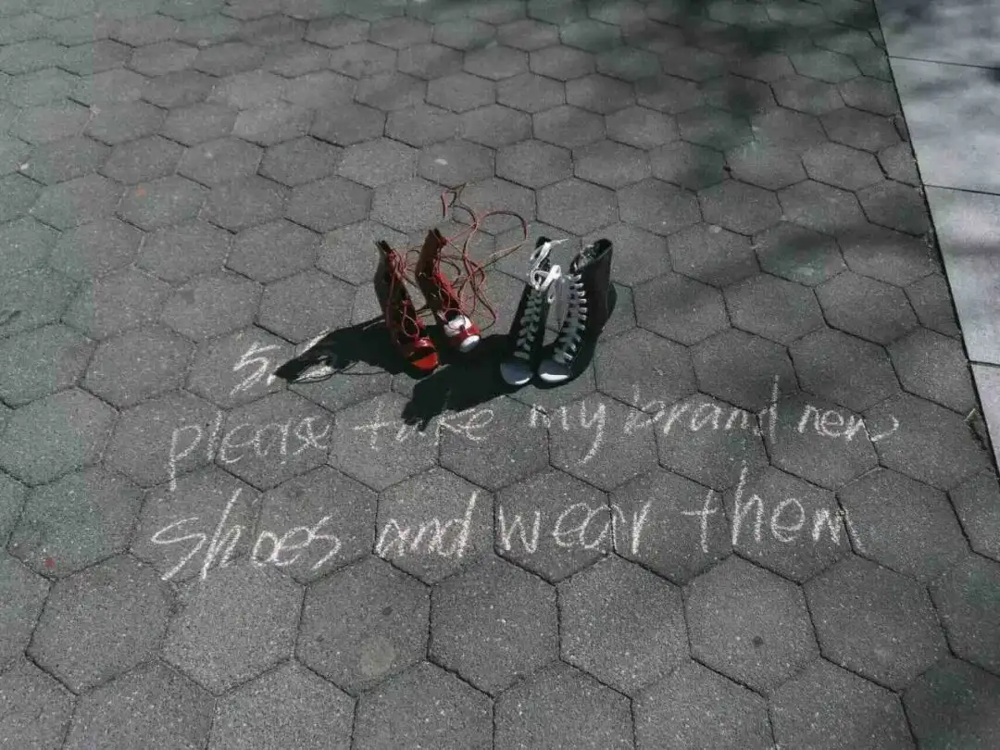
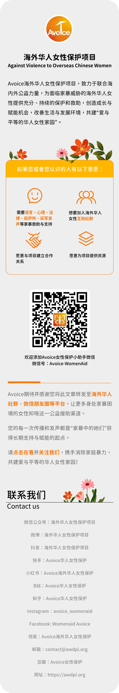

2025年3月8日，亚洲女性发展计划（AWDPI）与全球性组织 The Women’s March 及纽约本地社会组织 Rise and Resist携手，成功参与了 纽约市“妇女大游行”（Women’s March），共同庆祝国际妇女节。本次活动汇聚了众多来自不同背景的女性及其支持者，为性别平等、社会正义和女性权利发声，展现了团结与力量。

活动精彩回顾
工作坊：凝聚力量，表达诉求
活动当天上午11点，参与者们在华盛顿广场公园附近集合，首先参与了一小时的工作坊。AWDPI 为大家准备了丰富的物料，大家共同设计标语和海报，表达对性别平等、社会正义的诉求。从“恭喜，是个女孩”到“There is still tomorrow”，一条条充满力量的标语展现了参与者们的热情与坚定信念。
游行：携手同行，迈向未来
中午12点，AWDPI 成员与支持者们高举旗帜，正式加入游行队伍，沿途从华盛顿广场向联合广场进发。整个游行过程中，大家齐声呼喊口号，吸引了许多路人的关注与支持。亚洲女性在社会中发挥着重要作用，但仍面临着性别与文化偏见、职业发展障碍及安全问题等挑战。AWDPI 希望通过这次活动，让更多人关注亚洲女性的多元声音与贡献，共同推动更包容、公平的社会环境。
✦
•
✦
✦
左右滑动，查看更多
✦
团建交流：分享感悟，持续行动
游行结束后，部分参与者自发组织了自由交流环节，分享各自的感受与心得。有参与者表示，这是她们第一次参与妇女大游行，亲身体验到这种集体行动的力量，让她们更加坚定支持性别平等的决心。AWDPI 也鼓励大家在日常生活中持续关注女性权益，推动社会进步。
感谢与展望
AWDPI 诚挚感谢所有参与者、志愿者及合作伙伴 The Women’s March, Rise and Resit 以及Lexi Lin对本次活动的支持。妇女节不仅仅是庆祝，更是行动的起点。未来，AWDPI 将继续致力于推动亚洲女性的权益，为性别平等、社会公正贡献力量。
✦
•
✦
✦
左右滑动，查看更多
✦
让我们携手共进，继续为所有女性争取更公平、更美好的未来！
图文来源｜Avoice美国国家办公室
排版/封面｜胡潇予


